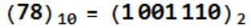
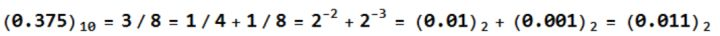
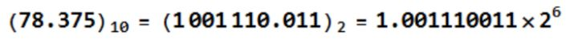
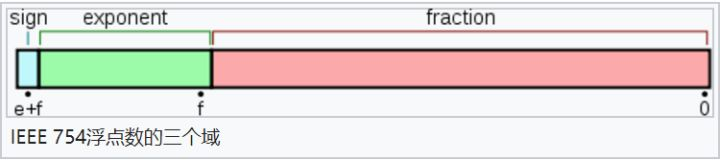

float と double の値の範囲と計算精度を理解するには、まず小数がコンピュータ内でどのように格納されているかを知る必要があります：
例を挙げます：78.375 は正の小数です。この数をコンピュータに格納するには、浮動小数点数の形式で表現する必要があり、まず2進数変換を行います：
PS：2進数の小数点と10進数の小数点は異なります。2進数の小数点以下は2の負の冪、10進数は10の負の冪です。
一 小数の2進数変換(浮動小数点数)
78.375 の整数部分：

小数部分：

したがって、78.375 の2進数形式は 1001110.011 です。
次に、2進科学表記法を用いると、

注意：変換後に2進科学表記法で表されたこの数は、底・指数・小数部分を持ち、これを浮動小数点数と呼びます。
二 浮動小数点数のコンピュータ内での格納
コンピュータでは、この数を保存するのに浮動小数点表現法を使用し、3つの主要部分に分けられます：
最初の部分は符号部（sign）を格納するために使われ、正負を区別するために使います。ここでは 0 なので正数を表します。
2番目の部分は指数部（exponent）を格納するために使われ、ここでの指数は10進数の 6 です。
3番目の部分は小数部（fraction）を格納するために使われ、ここでの小数部分は 001110011 です。
注意すべき点として、指数にも正負があり、これについては後で説明します。下図のようになります：

例えば float 型は32ビットで、単精度浮動小数点表現法です：
符号部（sign）は1ビットを占め、正負の数を表します。
指数部（exponent）は8ビットを占め、指数を表します。
小数部（fraction）は23ビットを占め、小数を表し、不足分は0で埋めます。
一方、double 型は64ビットで、倍精度浮動小数点表現法です：
符号部は1ビット、指数部は11ビット、小数部は52ビットを占めます。
ここまでで、実は何となく見えてきます：
指数部が値の範囲を決定します。なぜなら、指数部が表現できる数が大きいほど、表現できる数も大きくなるからです！
一方、小数部が計算精度を決定します。なぜなら、小数部が表現できる数が大きいほど、計算できる精度も高くなるからです！
まだよく分からないかもしれませんので、例を挙げましょう：
float の小数部はわずか23ビット、つまり2進数の23桁であり、表現できる最大の10進数は2の23乗、すなわち 8388608、つまり10進数で7桁です。厳密に言うと、精度は10進数の6桁の演算まで100%保証できます。
double の小数部は52ビットあり、対応する10進数の最大値は 4,503,599,627,370,496 です。この数は16桁あるため、計算精度は10進数の15桁の演算まで100%保証できます。
PS：よく見かける科学計算用電卓、例えば高校時代に使ったものは、一般的に最大で15桁の演算をサポートしており、それを超えると正確ではなくなります。実際のプログラミングでも、15桁の演算を保証できるため、double 型がよく使われます。さらに高精度な演算が必要な場合は、java の BigDecimal 型など他のデータ型を使用する必要があり、より高精度な演算をサポートできます。
三 指数部のオフセットと符号なし表現
注意すべき点は、指数は負の場合もあれば正の場合もある、つまり指数は符号付き整数です。そして、符号付き整数の計算は符号なし整数よりも面倒です。そのため、不必要な手間を減らすために、実際に指数を格納する際には、指数を符号なし整数に変換する必要があります。では、どう変換するのでしょうか？
float の指数部は8ビットなので、指数の値の範囲は -126 から +127 です。負数が実際の計算に与える影響（例えば、大小比較や加減算など）をなくすために、実際に格納する際に指数に簡単なマッピングを行い、オフセットを加算します。例えば float の指数オフセットは 127 で、これにより負数が出現しなくなります。
例えば：
指数が 6 の場合、実際に格納されるのは 6+127=133、つまり 133 を2進数に変換してから格納します。
指数が -3 の場合、実際に格納されるのは -3+127=124、つまり 124 を2進数に変換してから格納します。
実際に表す10進数を計算する必要がある場合は、指数からオフセットを引くだけでよいです。
対応する double 型では、格納時の指数オフセットは 1023 です。
四 最後に
したがって、float 型で10進数の小数 78.375 を保存する場合、まず浮動小数点数に変換して、符号部と指数部と小数部を得ます。この例は前に分析済みなので：
符号部は 0、指数部は 6+127=133、2進数表現は 10 000 101、小数部は 001110011、不足分は自動的に0で埋めてください。
つなげて float で表現すると、太字部分が指数部、一番左が符号部 0 で正数を表します：
0 10000101 001110011 00000 00000 0000
double で保存する場合は。。。自分で計算してください、0が多すぎます。
著者：Boss呱呱
リンク：https://www.zhihu.com/question/46432979/answer/221485161